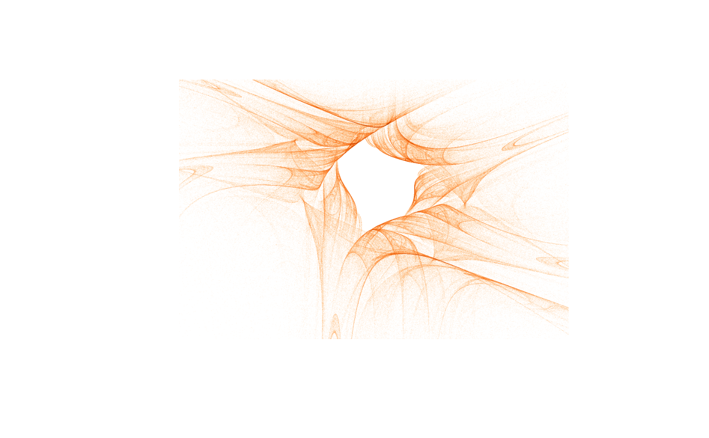
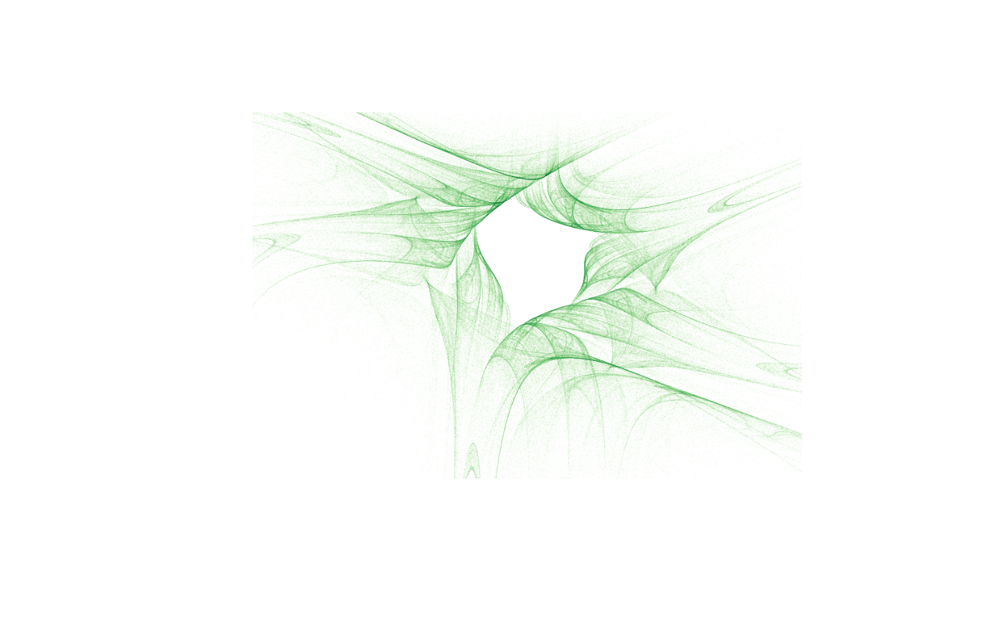
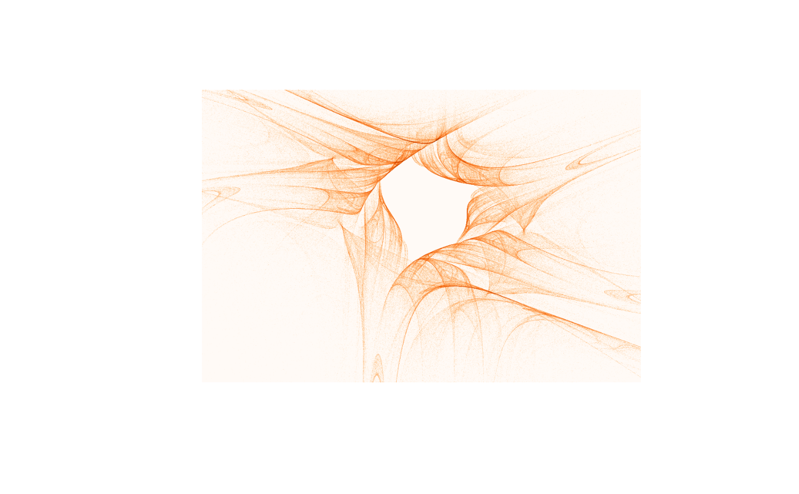
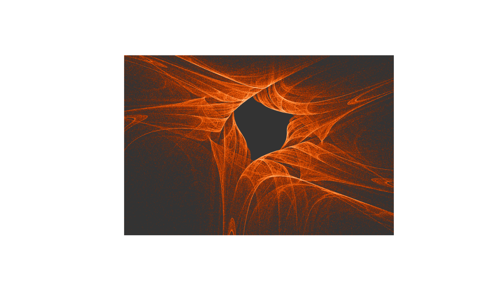

Generate strange attractor using equation 7E of Sprott.
Source:R/attractor_sprott_7e.R
attractor_sprott_7e.RdThis attractor is based on Equation 7E of Sprott (see references).
Usage
attractor_sprott_7e(
a,
n,
x0 = 1,
y0 = 1,
dims = c(600, 600),
progress = (n >= 1e+05),
n_discretize = 1e+06,
qs = 0.05,
parallel_orbit = default_parallel_orbit(),
discretize = TRUE
)Arguments
- a
Numeric vector of length 14
- n
Number of points to generate
- x0
Initial value for x
- y0
Initial value for y
- dims
Dimensions of resulting matrix
- progress
Ignored; retained for backward compatibility
- n_discretize
Ignored; the range is set from the first 1e6 points
- qs
quantile cutoff, a single number in
[0, 0.5)- parallel_orbit
Number of parallel orbit trajectories (one per thread by default);
1for the serial orbit- discretize
If
TRUEdiscretizes to a matrix with dimensionsdimselse a data frame
Value
if discretize == TRUE a matrix with dimensions dims, else a data frame with columns x and y, and n rows.
Details
$$x_{i+1} = a_{1} + a_{2} * x_{i} + a_{3} * y_{i} + a_{4} * |x_{i}|^{a5} + a6 * |y_{i}|^{a7}$$
$$y_{i+1} = a_{8} + a_{9} * x_{i} + a_{10} * y_{i} + a_{11} * |x_{i}|^{a12} + a13 * |y_{i}|^{a14}$$
References
Julien C. Sprott, "Strange Attractors: Creating Patterns in Chaos", page 418, Equation 7e, http://sprott.physics.wisc.edu/fractals/booktext/sabook.pdf
See also
Other sprott functions:
png_sprott_7e(),
seed_sprott_7e()
Examples
# Generate the seed vector (14 random values)
a <- seed_sprott_7e(fast_forward = 429)
# Generate points, trim at the 0.03 quantile, and discretize to a 600x900 matrix
dat <- attractor_sprott_7e(a, n = 1e6, qs = 0.03, dims = c(600, 900))
# Plot using various palettes from `RColorBrewer`
plot(recolour(dat, palette = "Oranges"))

plot(recolour(dat, palette = "Greens"))

plot(recolour(dat, palette = "Oranges", zero_colour = "#FFFAF6"))

plot(recolour(dat, palette = "Oranges", zero_colour = "grey20", invert = TRUE))
